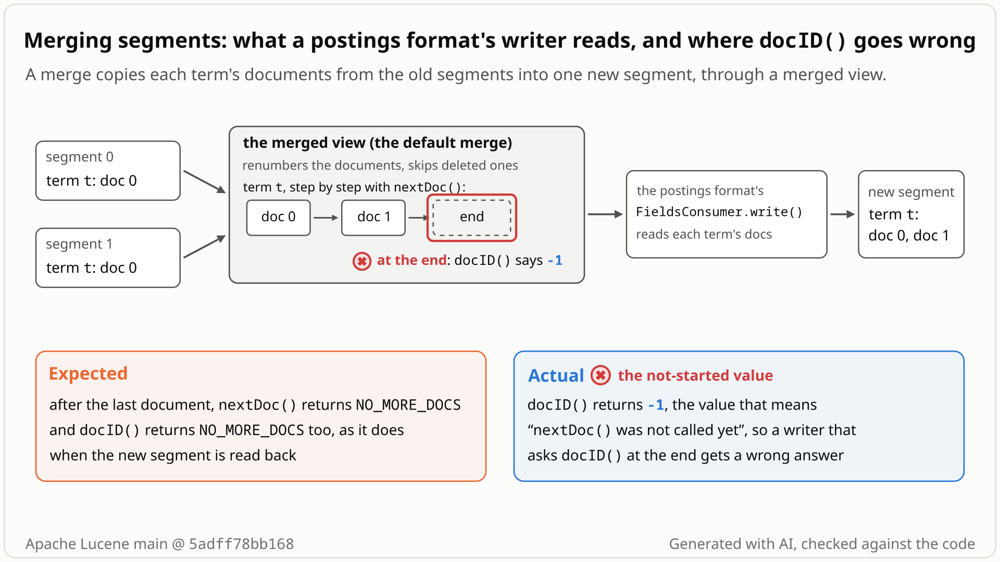

The merge enum derives docID() from the segment sub-enum it is on: current == null ? -1 : current.mappedDocID. On a fresh enum current is null before the first nextDoc() and again after the last, and reset() does not clear it, so the states the contract tells apart get mixed up.
- A
PostingsEnumis aDocIdSetIteratorover one term's documents.nextDoc()returns the next document, orNO_MORE_DOCS(2147483647) at the end;docID()repeats the current one: -1 before the firstnextDoc(),NO_MORE_DOCSafter the end. - A postings format writes postings in
FieldsConsumer.write(Fields, ...). At a merge, the defaultFieldsConsumer.mergepassesMappedMultiFields: a view of the old segments with deleted documents dropped and document IDs renumbered. - In that view each term's documents come from a
MappingMultiPostingsEnum, which walks the segments' postings in turn and maps each document to its new ID;postings(reuse, ...)reuses it for the next term of the same field.

docID() should then say NO_MORE_DOCS (2147483647) but says -1, the "not started" value, because it reads a sub-enum that is no longer there. Select the still to open it at full size. Generated with AI, checked against the code.- A custom postings format wraps the default one and keeps the default merge. Index two documents with
f:t, one per segment, and runforceMerge(1): the merge handswrite()a merged view of the two segments. - In
write(), walk termt:nextDoc()returns 0, 1, thenNO_MORE_DOCS(2147483647). Then calldocID(). You expect 2147483647:docID()isNO_MORE_DOCSonce the iterator is exhausted, and -1 only before the firstnextDoc(). - You get -1. The merge enum keeps no doc of its own:
docID()reads the segment sub-enum it is on, and after the last document there is none, which it reports as "not started". - Same cause, second symptom: reused for the next term after a partly read one, the enum reports the old term's document (0) instead of -1 until its first
nextDoc(). A helper that starts fromdocID(), such asFixedBitSet.or, makes the merge throw (Index -1 out of bounds) on a term whose documents were all deleted.
Only custom postings formats that keep the default merge and read docID() after a merged term ends or right after the enum is reused, or pass the enum to a docID()-based helper such as FixedBitSet.or. Any ordinary merge reaches it, at any index size. Lucene's own formats use nextDoc()'s return value, so stock codecs and indexes are unaffected.
Mechanism, terms and numbers477 words
When segments merge, the default FieldsConsumer.merge wraps the old segments in MappedMultiFields and passes that view to the postings format's write(). Each term's documents come from a MappingMultiPostingsEnum, whose docID() is current == null ? -1 : current.mappedDocID. On a fresh enum current is null before the first nextDoc(), and it is null again after the last one, so after nextDoc() has returned NO_MORE_DOCS the enum reports -1 instead of NO_MORE_DOCS, which DocIdSetIterator.docID() documents. reset(), used when the enum is reused for the next term of the same field, does not clear current, so after a partly read term the reused enum reports that term's document until its first nextDoc().
Lucene's own postings writers use nextDoc()'s return value, so stock codecs and indexes are unaffected. A custom postings format that reads docID() there, or hands the enum to a helper that starts from docID() such as FixedBitSet.or, gets the wrong value; in the FixedBitSet.or case the merge throws. The class kept its own doc field until 6.1.0; the LUCENE-6766 rewrite onto DocIDMerger dropped it, and every release from 6.2.0 to 10.6.0 is affected.
FieldsConsumer.merge(codecs/FieldsConsumer.java:72-96) buildsnew MappedMultiFields(mergeState, new MultiFields(...))and callswrite(mergedFields, norms)(:91-95). EveryFieldsConsumerthat does not overridemerge()gets this view.MappedMultiFields'postings(reuse, flags)(index/MappedMultiFields.java:116-134) reuses aMappingMultiPostingsEnumof the same field (:119-121) and callsreset(...)(:132).MappingMultiPostingsEnum(package-private,@lucene.experimental) has no doc field, onlycurrent(index/MappingMultiPostingsEnum.java:34):nextDoc()(:98-106):current = docIDMerger.next(); if (current == null) return NO_MORE_DOCS;The end is returned but not recorded.docID()(:84-91):if (current == null) return -1; else return current.mappedDocID;After exhaustioncurrentis null, so -1.reset()(:65-77) re-points the subs and callsdocIDMerger.reset()but does not clearcurrent, so after a partly read termdocID()still returns that term's mapped document. After a fully drained termcurrentis already null, and -1 is right for a fresh enum.
- Follow-on:
FixedBitSet.or(iter)(util/FixedBitSet.java:455-460) checks thatdocID()is -1, callsnextDoc(), thenintoBitSet(NO_MORE_DOCS, this, 0), whose default (search/DocIdSetIterator.java:205-210,@lucene.internal) starts atdocID(). On a term with no live documentsnextDoc()returnsNO_MORE_DOCSbutdocID()stays -1: the assertoffset <= docID()fails, or with assertions offbitSet.set(-1)throws. The merge view does expose such terms (FieldsConsumer.java:56-58: "even though the provided Fields API will expose them"). - Merge paths: the repro and the probes run the ordinary unsorted merge (
SequentialDocIDMerger, which sets itscurrentto null and returns null at the end,index/DocIDMerger.java:122-132). With an index sort,SortedDocIDMerger.next()also ends withcurrent = null(:194-196), so the enum should report -1 there too (read from the code, not run).
Exposure and likelihood189 words
- Who is hit: a custom
PostingsFormat(a public,@lucene.experimentalextension point) whoseFieldsConsumerkeeps the defaultmerge(). Any ordinary merge that gives such awrite()a term reaches it: no scale, index sort or special merge setting is needed beyond installing the postings format (the repro also setsSerialMergeScheduler, for determinism); two documents suffice. - Not hit: stock codecs. Every in-tree postings writer uses
nextDoc()'s return value (for examplePushPostingsWriterBase.java:131,int docID = postingsEnum.nextDoc();); Bloom's peek-then-reuse pattern only testsnextDoc()'s result. Downstream codecs were not surveyed. - Effect: a silent wrong value (-1 means "not started"); with
FixedBitSet.oron a term whose documents were all deleted, a failed merge (AssertionError: offset=0 docID()=-1with assertions on,ArrayIndexOutOfBoundsException: Index -1 out of bounds for length 1with them off). A consumer that pollsdocID()for the end never seesNO_MORE_DOCSand callsnextDoc()again, whichDocIDMerger.next()'s javadoc leaves unpredictable after exhaustion (DocIDMerger.java:91-95); in the code both mergers then dereference their nullcurrent(:123,:187; read, not run). - How likely: rare. No public report of it was found since 6.2.0 (2016).
One JUnit test, placed in org.apache.lucene.index (it checks for MappedMultiFields, a public @lucene.internal class, to skip the flush-time call; it also works from another package): a pass-through postings format drains term f:t of the merged view and records docID(). Two one-document segments, forceMerge(1); deterministic, single thread; fails with assertions on and off.
/*
* Licensed to the Apache Software Foundation (ASF) under one or more
* contributor license agreements. See the NOTICE file distributed with
* this work for additional information regarding copyright ownership.
* The ASF licenses this file to You under the Apache License, Version 2.0
* (the "License"); you may not use this file except in compliance with
* the License. You may obtain a copy of the License at
*
* http://www.apache.org/licenses/LICENSE-2.0
*
* Unless required by applicable law or agreed to in writing, software
* distributed under the License is distributed on an "AS IS" BASIS,
* WITHOUT WARRANTIES OR CONDITIONS OF ANY KIND, either express or implied.
* See the License for the specific language governing permissions and
* limitations under the License.
*/
package org.apache.lucene.index;
import java.io.IOException;
import org.apache.lucene.codecs.FieldsConsumer;
import org.apache.lucene.codecs.FieldsProducer;
import org.apache.lucene.codecs.NormsProducer;
import org.apache.lucene.codecs.PostingsFormat;
import org.apache.lucene.document.Document;
import org.apache.lucene.document.Field;
import org.apache.lucene.document.StringField;
import org.apache.lucene.search.DocIdSetIterator;
import org.apache.lucene.store.ByteBuffersDirectory;
import org.apache.lucene.store.Directory;
import org.apache.lucene.tests.util.LuceneTestCase;
import org.apache.lucene.tests.util.TestUtil;
public class TestMergePostingsDocIdAfterExhaustion extends LuceneTestCase {
public void testDocIdAfterExhaustionAtMerge() throws Exception {
PostingsFormat delegate = TestUtil.getDefaultPostingsFormat();
int[] docIdAfterExhaustion = {0};
PostingsFormat probe =
new PostingsFormat(delegate.getName()) {
@Override
public FieldsConsumer fieldsConsumer(SegmentWriteState state) throws IOException {
FieldsConsumer in = delegate.fieldsConsumer(state);
return new FieldsConsumer() {
@Override
public void write(Fields fields, NormsProducer norms) throws IOException {
if (fields instanceof MappedMultiFields) {
TermsEnum termsEnum = fields.terms("f").iterator();
termsEnum.next();
PostingsEnum postings = termsEnum.postings(null);
while (postings.nextDoc() != DocIdSetIterator.NO_MORE_DOCS) {}
docIdAfterExhaustion[0] = postings.docID();
}
in.write(fields, norms);
}
@Override
public void close() throws IOException {
in.close();
}
};
}
@Override
public FieldsProducer fieldsProducer(SegmentReadState state) throws IOException {
return delegate.fieldsProducer(state);
}
};
try (Directory dir = new ByteBuffersDirectory();
IndexWriter w =
new IndexWriter(
dir,
new IndexWriterConfig()
.setCodec(TestUtil.alwaysPostingsFormat(probe))
.setMergeScheduler(new SerialMergeScheduler()))) {
for (int i = 0; i < 2; i++) {
Document doc = new Document();
doc.add(new StringField("f", "t", Field.Store.NO));
w.addDocument(doc);
w.flush();
}
w.forceMerge(1);
}
// Expected NO_MORE_DOCS (DocIdSetIterator#docID() after exhaustion); actual: -1.
assertEquals(DocIdSetIterator.NO_MORE_DOCS, docIdAfterExhaustion[0]);
}
}
cd $LUCENE && ./gradlew :lucene:core:test --tests org.apache.lucene.index.TestMergePostingsDocIdAfterExhaustion -Ptests.seed=DEADBEEF
- Expected
docID()after the drain isNO_MORE_DOCS(2147483647).- Observed
docID()is -1:AssertionError: expected:<2147483647> but was:<-1>, with assertions on and off.
More files, environment, full output128 words
The postings format has the default format's name and delegates everything; only its write() looks at the merged view. ByteBuffersDirectory, SerialMergeScheduler, seed DEADBEEF. Copy the file into lucene/core/src/test/org/apache/lucene/index/ and run the command; add -Ptests.asserts=false to run with assertions off. The suggested regression test is this same test.
| lucene | main 5adff78bb168 (12.0.0-SNAPSHOT), 10.6.0, 10.0.0, 9.12.3 and 9.1.0: fail; 9.0.0: does not compile (no `org.apache.lucene.tests.util` package); main with fix A: passes |
|---|---|
| jdk | OpenJDK 25.0.3 |
| os | Linux, aarch64 |
cp $REPRO/TestMergePostingsDocIdAfterExhaustion.java $LUCENE/lucene/core/src/test/org/apache/lucene/index/
cd $LUCENE && ./gradlew :lucene:core:test --tests org.apache.lucene.index.TestMergePostingsDocIdAfterExhaustion -Ptests.seed=DEADBEEF
# assertions off fails the same way: add -Ptests.asserts=false
TestMergePostingsDocIdAfterExhaustion > testDocIdAfterExhaustionAtMerge FAILED
java.lang.AssertionError: expected:<2147483647> but was:<-1>
at org.apache.lucene.index.TestMergePostingsDocIdAfterExhaustion.testDocIdAfterExhaustionAtMerge(TestMergePostingsDocIdAfterExhaustion.java:85)
# the same line with -Ptests.asserts=false; with fix A: BUILD SUCCESSFUL (on and off)DocIdSetIterator.docID()must returnNO_MORE_DOCSonce exhausted.FieldsConsumer.writelists the merge view's limits (statistics, live docs);docID()is not one of them.- Every other merge view that is an iterator (five doc-values, one norms and three vector-values views) records
NO_MORE_DOCS, and this class did too until 6.1.0. - Lucene's test framework calls forgetting this a "Common bug" (
RandomPostingsTester.java:1040).
The full argument246 words
- Contract.
DocIdSetIterator.docID()returns "-1if nextDoc() or advance(int) were not called yet" and "NO_MORE_DOCS if the iterator has exhausted" (search/DocIdSetIterator.java:113-124,@since 2.9);PostingsEnum extends DocIdSetIterator. The limits of the Fields given towrite()are statistics/counts and non-null live docs (codecs/FieldsConsumer.java:59-61). - Tests.
AssertingLeafReader.java:505assertssuper.docID() == nextDocon read-side enums, andRandomPostingsTester.java:1040says "Common bug is to forget to set this.doc=NO_MORE_DOCS in the enum!". - Siblings. The five
DocIDMerger-based iterators inDocValuesConsumer.java(:249,:359,:492,:767,:997) and the norms iterator inNormsConsumer.java:150all setdocID = NO_MORE_DOCSon exhaustion (they came with LUCENE-7407's iterator-based doc values,f7aa200d406, first in 7.0.0), as do the three merged vector values inKnnVectorsWriter.java(:453,:551,:665); in the same merge the merged norms iterator reportsNO_MORE_DOCSwhile the postings enum reports -1. - History. In 6.1.0 this class kept
int doc = -1, reset it inreset()and ended withreturn this.doc = NO_MORE_DOCS. LUCENE-6766 (#7824) dropped the field (54fa7dfd271);8fe78da23c0added thecurrent == null ? -1branch, which is right for the unpositioned state and also answers -1 after exhaustion. Neither commit nor the issue discussion mentionsdocID(). - Precedent. The same omission was fixed as a bug in read-side enums (LUCENE-2888, #3962). #14992 (fixed by #15553, "Fix MergedByteVectorValues internal ordinal tracking") is a similar state-tracking slip in another
DocIDMerger-based merge view, not the same omission.
The devil's-advocate check166 words
The strongest case for "intended": the merge view is a documented limited, experimental adapter (MappedMultiFields is @lucene.internal, the enum is package-private and @lucene.experimental, advance() throws UnsupportedOperationException), PostingsEnum's javadoc says "you must first call nextDoc before using any of the per-doc methods", no in-tree code observes the value, and the -1 branch was added explicitly (8fe78da23c0). An independent cross-model reviewer rated this case moderate.
Why it fails: the deliberate limits are listed and fail loudly (advance() and the statistics methods throw), while docID() silently returns a value the contract forbids. docID() is defined for the exhausted state; it is not a per-doc method. The -1 branch is right for the unpositioned state; the available history does not say whether its author considered the exhausted one, and the class honoured the exhausted state until 6.1.0. "Nothing in Lucene observes it" is why it is Low, not why it is intended; a maintainer may still find it too minor to prioritize.
Recommended A: restore an explicit doc field (recommended)
Restore an explicit doc field, as the class had until 6.1.0 and as the sibling merge views do: nextDoc() stores its result (including NO_MORE_DOCS), docID() returns it, and reset() sets current = null and doc = -1. +6/-7 lines; validated with the repro and the closest merge and postings suites.
private int doc = -1;
// reset(), after docIDMerger.reset():
current = null;
doc = -1;
// docID():
return doc;
// nextDoc():
current = docIDMerger.next();
if (current == null) {
return doc = NO_MORE_DOCS;
} else {
return doc = current.mappedDocID;
}All options and trade-offs3 options · 398 words
Option A was applied in a scratch worktree of 5adff78bb168 and validated; B and C were not run.
In MappingMultiPostingsEnum: add private int doc = -1; nextDoc() returns doc = NO_MORE_DOCS or doc = current.mappedDocID; docID() returns doc; reset() sets current = null; doc = -1; after docIDMerger.reset(). This is the 6.1.0 shape and the pattern of the sibling merge views in DocValuesConsumer and NormsConsumer.
private int doc = -1;
// reset(), after docIDMerger.reset():
current = null;
doc = -1;
// docID():
return doc;
// nextDoc():
current = docIDMerger.next();
if (current == null) {
return doc = NO_MORE_DOCS;
} else {
return doc = current.mappedDocID;
}Trade-offs
- One int store per
nextDoc()on the merge path; no benchmark was run (the sibling views already pay it). - Clearing
currentinreset()makesfreq()/nextPosition()before the firstnextDoc()fail as on a fresh enum instead of reading the previous term's sub;PostingsEnum's javadoc already forbids that call.
What the checks validated
- Gradle in a scratch worktree of
5adff78bb168, seedDEADBEEF(2026-11-05): the repro fails on stock main with assertions on and off, and passes with the fix, on and off. - With the fix:
TestMultiFields,TestSegmentMerger,TestCodecs,TestPostingsOffsets,TestDocIDMerger,TestIndexSorting,TestAddIndexesandTestLucene104PostingsFormatpass (158 tests, 2 skipped, 0 failures, plus the repro);checkGoogleJavaFormat,ecjLintMain,ecjLintTest,forbiddenApisMainandforbiddenApisTestof:lucene:corepass. - In the codecs module, two formats that keep the default merge pass with the fix:
TestBloomPostingsFormat(30 tests, 2 skipped) and the@NightlyTestSimpleTextPostingsFormatrun with-Ptests.nightly=true(30 tests, 1 skipped), 0 failures. - Earlier (2026-11-03) the same change, shadowed in, passed the supporting probe (reused enum -1,
FixedBitSet.orcardinality 0) and an independent reproducer's test.
docID() returns current == null ? (exhausted ? NO_MORE_DOCS : -1) : current.mappedDocID; reset() clears both the flag and current.
Trade-offs
Same behaviour, but two pieces of state for one value, unlike the sibling views. Not run.
Add docID() to the limits listed in FieldsConsumer.write's javadoc.
Trade-offs
No code change, but the enum still breaks DocIdSetIterator's contract, FixedBitSet.or and the default intoBitSet still fail on it, and it stays inconsistent with the sibling merge views. Not recommended.
Relevant downstream only to custom postings formats that keep the default merge: use nextDoc()'s return value rather than docID() on the merge view, and do not pass the merge enum to docID()-based helpers such as FixedBitSet.or.
Semi-formal: a proof-obligation audit of MappingMultiPostingsEnum against the DocIdSetIterator.docID() contract, state by state (before the start, on a document, exhausted, after reset()). The exhausted and after-reset states break it; a one-test JUnit repro on stock main witnessed it.
The method in full99 words
- Obligation: in every state of the enum,
docID()is -1 before the firstnextDoc(), the document last returned while positioned, andNO_MORE_DOCSoncenextDoc()has returned it (DocIdSetIterator.java:113-124);reset()returns the enum to the unpositioned state. - Finding:
docID()iscurrent == null ? -1 : current.mappedDocID(MappingMultiPostingsEnum.java:84-91);nextDoc()setscurrentto null at the end without recording it (:98-106), andreset()leavescurrentas it was (:65-77). - Witness: a JUnit test on stock main, then an independent reproduction, a cross-model review, an intended-behaviour review and an adjudication (see Independent checks).
No prior report found (searched 2026-11-03, re-checked 2026-11-05): three scripted prior-report searches (135 GitHub, commit, downstream, list and JIRA queries), 11 web searches, 4 JIRA searches, 22 manual GitHub searches and the file lists of all open PRs. Nearest: open PR #16475 notes a write-side docID() assertion trip without naming this class or merging.
Searches4 searches
No issue, PR, review comment, commit message, JIRA entry, list thread, downstream item or web page describes this defect, and nothing upstream fixes it. Related but not the same defect: open PR #16475 (no reviews) records that wrapping the write-side Terms in AssertingTerms trips assert super.docID() == nextDoc in three BasePostingsFormatTestCase tests; it names no class, defect or merge, and in those tests the first trip is at flush (in the flush-time postings enums, a separate finding; read from the code, not run). Precedent, not a report: #3962 (LUCENE-2888, the same omission in read-side enums); #14992 is only a similar state-tracking slip in another merge view. Caveat: keyword search only; private reports are not visible.
| Where | When | How | Found |
|---|---|---|---|
| a scripted prior-report search, three runs: GitHub issues/PRs and commits (apache/lucene), Elasticsearch, OpenSearch and Solr, dev@, java-user@, issues@ and commits@, the JIRA archive | 2026-11-03 | 45 non-web queries per run, 135 in all (claim terms; class and method names such as MappingMultiPostingsEnum, DocIDMerger, mappedDocID; symptom terms such as FixedBitSet.or, intoBitSet, "Index -1 out of bounds"); 3222, 2354 and 3067 hits, top hits read | no report of this defect |
| Web | 2026-11-03 | 4 of the tools' 21 web queries ran (17 left pending); 7 manual web searches | nothing relevant |
| JIRA archive (REST) and GitHub (manual) | 2026-11-03 | 4 JIRA text searches and the comments of 12 issues (LUCENE-6766, 7568, 7600, 7601, 2888, 3580, 4924, 10357, 6826, 5899, 4018, 7875); 10 GitHub issue/PR searches, 2 code searches; the file lists of all 416 open PRs; a re-check with 8 searches and every item updated since 2026-11-02 | no report; no open PR touches MappingMultiPostingsEnum.java; #16475 related |
| GitHub re-check | 2026-11-05 | 4 searches (MappingMultiPostingsEnum on apache/lucene and on all of GitHub, "MappedMultiFields docID", "merge postings docID NO_MORE_DOCS"), the file's commit history, the 71 items updated since 2026-11-03 and the file lists of the 65 PRs among them | still none; only #16851 touches a related file (DocIDMerger.reset), not this enum |
Introduced in 6.2.0 by LUCENE-6766 (#7824, 2016), which moved the enum onto DocIDMerger and dropped its doc field. Every release from 6.2.0 through 10.6.0 and main fail; 6.1.0 and earlier pass. Not fixed upstream.
Versions tested4 rows
Introduced by LUCENE-6766 "Make index sorting a first-class citizen" (#7824, JIRA era, no PR): 54fa7dfd271 (author date 2016-05-04) removed the doc field, and 8fe78da23c0 (2016-05-06) added the current == null ? -1 guard that gives today's value. Both reached branch_6x as fdc220eeb42 and 1530c5a9a5d (2016-06-11); first release 6.2.0.
The one-test repro needs the 9.1+ test framework, so older releases were checked with a core-only main() variant of the same check. Not fixed upstream: the newest commit on the file is 942065cc3e7 (#13328, 2024-09-10) at upstream main d060c053bd89 (2026-11-05).
| Version or commit | Verdict | Result |
|---|---|---|
main 5adff78bb168 | affected | repro fails with assertions on and off: -1 instead of 2147483647 |
| 10.6.0, 10.0.0, 9.12.3, 9.1.0 | affected | repro fails (assertions off); an independent test also fails on 10.5.2 |
| 6.2.0, 6.2.1, 6.6.6, 7.7.3, 8.11.4, 9.0.0 | core-only variant | docID() -1 after exhaustion, 0 after reuse |
| 5.5.5, 6.0.0, 6.1.0 | core-only variant | NO_MORE_DOCS after exhaustion, -1 after reuse |
An independent reproduction, a cross-model review (OpenAI GPT-5.6), an intended-behaviour review, an adjudication and a registry re-run each confirmed it with their own runs; the cross-model review rated the "intended" case moderate but found the bug real. This doc re-ran the test and the fix with gradle.
Checks and verdicts309 words
Every check ran code on main 5adff78bb168 (the cross-model review on the earlier main ea57360912ed, whose MappingMultiPostingsEnum.java has the same code, and re-run on 5adff78bb168).
| Check | Verdict | What it found |
|---|---|---|
| Minimal repro and fix re-run (this doc) | fails on main; passes with fix A | Gradle in a scratch worktree, assertions on and off: the repro fails on stock and passes with fix A; the closest merge and postings suites and the lint checks pass with the fix. |
| Independent reproduction | real | Own test, written from the claim (it detects the merge by overriding FieldsConsumer.merge and drains every term), fails on main (on and off) and on 10.6.0, 10.5.2 and 9.12.3; passes with the fix. It narrowed the reuse half: the stale value shows only after a term abandoned before its end. |
| Adversarial review, refute lens (OpenAI GPT-5.6) | real, high confidence | Own public-API test (FilterCodec, two ordinary documents, forceMerge): 2 of 3 tests fail on and off on both commits; an ordinary-reader control passes; with the fix 3 of 3 pass. Root cause and fix agreed; inputs within the contract; "intended" case rated moderate. |
| Intended-behaviour review | real, Low | Own FilterCodec probe (merge detected from IOContext) on main and 10.6.0: reused enum 0, after the drain -1, while the merged norms iterator in the same merge reports -1 before its first nextDoc() and NO_MORE_DOCS after the end. Built and rebutted the "limited experimental view" case. |
| Adjudication | confirmed, high; minor, Low | Re-ran the independent test on main: fails on and off; passes with the fix. Low: a wrong public return value that shows with assertions off, one minimal deterministic test. |
| Registry re-run | fails; passes with the fix | Seeds 5EED0901 (on) and 5EED0902 (off): 1 of 1 fails each; with the fix, seed 5EED0903, passes. |
The diagram as a still image, generated with AI and checked against the code. It is under 10 MB, the limit for a GitHub attachment.
- PNG 394 KB
Finding record, Lucene and upstream sources, repro files and diagram notes1,546 words
- Registry title
- The merge-time postings enum that the default FieldsConsumer.merge hands to a postings format's write() (MappingMultiPostingsEnum) returns -1 from docID() after nextDoc() has returned NO_MORE_DOCS, and, when it is reused after a partly read term, that term's document before the first nextDoc() (latent: Lucene's own postings writers use nextDoc()'s return value)
- Area
- index / postings merge (MappedMultiFields / MappingMultiPostingsEnum handed to FieldsConsumer.write)
- Priority
- Low, rank 1223: Latent: the merge-time postings enum handed to a postings format's write() returns -1 from docID() after nextDoc() has returned NO_MORE_DOCS, so a helper that drains it through docID() can throw at merge, in every release since 6.2.0. Lucene's own postings writers use nextDoc()'s return value, so only a custom postings format that reads docID() there is hit.
- Impact class
- minor
- Impact note
- Latent: only a custom PostingsFormat (public codec extension point, @lucene.experimental) that keeps the default FieldsConsumer.merge and whose write() reads docID() after a merged term's postings end, or right after the enum is reused for a partly read term, or that hands the enum to a helper that starts from docID() (FixedBitSet.or and the default intoBitSet throw at merge on a term whose documents are all deleted: AssertionError under -ea, ArrayIndexOutOfBoundsException -1 under -da), is hit, at every merge; docID() gives -1 instead of NO_MORE_DOCS. Every in-tree postings writer uses nextDoc()'s return value, so stock codecs and indexes are unaffected; no scale or non-default IndexWriterConfig is needed, it fails with -ea and -da, and every release from 6.2.0 to 10.6.0 is affected.
- Summary
- A custom postings format that keeps the default merge receives, in FieldsConsumer.write, a merged view of the segments' postings; it walks a term's documents with nextDoc() until NO_MORE_DOCS and then reads docID(), expecting NO_MORE_DOCS as DocIdSetIterator documents. Instead the merge-time enum (MappingMultiPostingsEnum) returns -1, the 'not started yet' value, because docID() is derived from its current sub-enum, which is null once the merge of that term is exhausted; when the enum is reused for the next term after a partly read one, docID() also reports the old term's document instead of -1 until the first nextDoc(). Lucene's own postings writers use nextDoc()'s return value and are not affected; helpers that start from docID(), such as FixedBitSet.or, throw at merge on a term whose documents are all deleted.
- Introduced
- 54fa7dfd271f7fe3bc8da2cfcd165e21e76e1804 (LUCENE-6766 'Make index sorting a first-class citizen', now apache/lucene#7824, 'initial patch' by Michael McCandless on the index_sort branch, merged into master by d715210467a; JIRA era, no pull request): it rewrote MappingMultiPostingsEnum onto the new DocIDMerger and removed the 'int doc = -1' field, nextDoc()'s 'return this.doc = NO_MORE_DOCS' and reset()'s 'doc = -1; current = null' [read: git show 54fa7dfd271 -- MappingMultiPostingsEnum.java; git log -S 'return this.doc = NO_MORE_DOCS' on the file]; at that commit docID() would have thrown NullPointerException whenever current == null (never released), and two days later, on the same branch, 8fe78da23c05af70c2ff6047a58a4a34708f96a5 (LUCENE-6766) added 'if (current == null) return -1;', which gives today's -1 after exhaustion [read: git blame of MappingMultiPostingsEnum.java:65-106 at 5adff78bb168]. Both reached a release through the branch_6x commits fdc220eeb423f97a3aa9b469f8bf8dbb118cc715 and 1530c5a9a5dacd0dbf1ae4bba2394ecee251c75b (identical to the master commits), first released in 6.2.0 (2016-05-04 (author date of 54fa7dfd271); 2016-05-06 (author date of 8fe78da23c0, the -1 guard); both committed to branch_6x on 2016-06-11 (fdc220eeb42, 1530c5a9a5d) and merged into master on 2016-05-13 (d715210467a))
- First affected version
- 6.2.0 [exec: the history probe passes on 6.1.0 (docID() after exhaustion = NO_MORE_DOCS, reused enum -1) and fails on 6.2.0 (-1; reused enum 0)]; 6.1.0 and earlier are not affected [exec: 5.5.5, 6.0.0, 6.1.0 pass; read: 6.1.0's MappingMultiPostingsEnum keeps an int doc field set to NO_MORE_DOCS; the 4.10.4 predecessor MappingMultiDocsEnum does the same]; the master-line commit first ships in 7.0.0
- Affected versions
- every release from 6.2.0 through 10.6.0 (released 2026-10-29, 4ae946e5a9b) and main 5adff78bb168 (12.0.0-SNAPSHOT) [exec: the one-test repro fails on 9.1.0, 9.12.3, 10.0.0 and 10.6.0 (-da) and on main (-ea and -da; it does not compile on 9.0.0, which lacks org.apache.lucene.tests.util); a main()-mode history variant of the same check (core only) fails on 6.2.0, 6.2.1, 6.6.6, 7.7.3, 8.11.4, 9.0.0, 9.12.3, 10.6.0 and main; the independent reproduction's own test fails on 10.6.0, 10.5.2 and 9.12.3 (-da); the intended-behaviour check's probe fails on 10.6.0 (-da)] [read: docID(), nextDoc() and reset() unchanged in behaviour since 6.2.0]. Not affected: 6.1.0, 6.0.0, 5.5.5 [exec]. Not new in 10.6. Not fixed upstream: upstream main f72004515ec (2026-11-03); the last commit on MappingMultiPostingsEnum.java is 942065cc3e7 (#13328, author date 2024-09-10), and no open PR touches the file [read]. All runs used JDK 25 on one aarch64 Linux host
- Status
- confirmed (independent verifiers agreed)
- Verification
- Confirmed by AI-run checks: an independent repro, a cross-model review that agreed, an intended-behaviour check, a prior-report search and a skeptical audit; not yet triaged by a person.
- Found by
- semi-formal: proof-obligation audit
- Upstream and prior reports
- none found, not fixed (searched and re-checked 2026-11-03, read-only, on top of the finder's, the independent reproduction's and the intended-behaviour check's searches): two scripted prior-report searches over GitHub issues, PRs and commits, Elasticsearch, OpenSearch and Solr, the dev@, java-user@, issues@ and commits@ lists, the JIRA archive and the web (class and method terms: 49 queries run of 54, 2354 distinct hits; symptom terms such as FixedBitSet.or, intoBitSet, 'Index -1 out of bounds', 'docID after exhaustion': 45 queries run of 51, 3067 hits; the queries not run were web queries) plus the finder's run (45 queries, 3222 hits); targeted GitHub searches ('MappingMultiPostingsEnum' in apache/lucene issues and PRs: 0; on all of GitHub: only elastic/elasticsearch#45368, an unrelated merge-time ArrayIndexOutOfBoundsException triaged as corruption, and a bot broken-links issue); GitHub code search (64 indexed copies of the class, none carrying a fix); JIRA REST queries and comment reads of LUCENE-6766 and related issues; the file lists of all 416 open apache/lucene PRs (none touches MappingMultiPostingsEnum.java; #16851 changes DocIDMerger.reset only, #16475 and #12295 other files) and, at the registration check, every item updated since 2026-11-02 (none concerns this code); per-file upstream commits by author date. Nearest item, not the same defect: open PR #16475 ('GITHUB#9967: document the Fields#iterator() order contract and assert it in tests', serhiy-bzhezytskyy, created 2026-08-02, last updated 2026-10-27, not merged, no reviews) records that wrapping the write-side Terms in AssertingTerms trips 'assert super.docID() == nextDoc' and fails three BasePostingsFormatTestCase tests; it names no class, defect or merge, and in the tests it refers to the first trip comes at flush, from the flush-time postings enums (a separate finding), before any merge runs [read; the PR's own variant was not run]. Precedents, not reports: #3962 (LUCENE-2888, 2011, the same omission in read-side enums, fixed) and #14992 (a sibling DocIDMerger-based merge view's contract slip, fixed by #15553). The LUCENE-6766 discussion (#7824) never mentions docID(). Upstream main f72004515ec (2026-11-03); last commit on MappingMultiPostingsEnum.java 942065cc3e7 (#13328, 2024-09-10)
- Lucene commit tested
- main
5adff78bb168(12.0.0-SNAPSHOT): gradle in a scratch worktree, stock and with fix A, assertions on and off (2026-11-05). Earlier runs of the same test (2026-11-03): main with assertions on and off; the 10.6.0, 10.0.0, 9.12.3 and 9.1.0 release jars with assertions off; a core-only variant of the same check on 5.5.5 through 10.6.0.
- Finding record
lucene/core/src/java/org/apache/lucene/index/MappingMultiPostingsEnum.java:30 (at 5adff78bb168) (package-private, @lucene.experimental at :28), :65-77 (reset(): does not clear current; fix site), :84-91 (docID(): 'current == null ? -1 : current.mappedDocID'; fix site), :93-96 (advance throws UnsupportedOperationException), :98-106 (nextDoc(): 'current = docIDMerger.next(); if (current == null) return NO_MORE_DOCS;' without recording it; fix site)lucene/core/src/java/org/apache/lucene/search/DocIdSetIterator.java:113-124 (at 5adff78bb168) (docID(): '-1 if nextDoc() or advance(int) were not called yet', 'NO_MORE_DOCS if the iterator has exhausted', @since 2.9), :205-210 (default intoBitSet starts at docID(), @lucene.internal)lucene/core/src/java/org/apache/lucene/codecs/FieldsConsumer.java:47-63 (at 5adff78bb168) (write(Fields, NormsProducer): the documented limits of the provided Fields are statistics/counts and non-null live docs; terms with no docs are exposed), :65-96 (default merge() builds MappedMultiFields and calls write())lucene/core/src/java/org/apache/lucene/index/MappedMultiFields.java:117-134 (at 5adff78bb168) (postings(reuse, flags) reuses a MappingMultiPostingsEnum of the same field and calls reset())lucene/core/src/java/org/apache/lucene/util/FixedBitSet.java:455-460 (at 5adff78bb168) (or(DocIdSetIterator): nextDoc() then intoBitSet from docID()); lucene/core/src/java/org/apache/lucene/codecs/DocValuesConsumer.java:249, :359, :492, :767, :997 and NormsConsumer.java:150 (sibling DocIDMerger-based merge views set docID = NO_MORE_DOCS)lucene/test-framework/src/java/org/apache/lucene/tests/index/AssertingLeafReader.java:505 (at 5adff78bb168) ('assert super.docID() == nextDoc;') and lucene/test-framework/src/java/org/apache/lucene/tests/index/RandomPostingsTester.java:1040 ('Common bug is to forget to set this.doc=NO_MORE_DOCS in the enum!')github.com/apache/lucene/pull/16475 (open; PR body), github.com/apache/lucene/issues/7824 (LUCENE-6766), github.com/apache/lucene/issues/3962 (LUCENE-2888), github.com/apache/lucene/issues/14992 (read 2026-11-03)
- The finding in 30 seconds
lucene@5adff78bb168 lucene/core/src/java/org/apache/lucene/codecs/FieldsConsumer.java:47-64 (write javadoc), :72-96 (default merge)lucene@5adff78bb168 lucene/core/src/java/org/apache/lucene/index/MappedMultiFields.java:116-134 (postings(reuse, flags), reset)lucene@5adff78bb168 lucene/core/src/java/org/apache/lucene/index/MappingMultiPostingsEnum.java:28-34, :65-77, :84-91, :98-106lucene@5adff78bb168 lucene/core/src/java/org/apache/lucene/util/FixedBitSet.java:455-460; search/DocIdSetIterator.java:113-124, :203-210lucene@5adff78bb168 lucene/core/src/java/org/apache/lucene/index/DocIDMerger.java:91-95, :122-132, :186-211 (both mergers end with current = null)
- Who is affected
lucene@5adff78bb168 lucene/core/src/java/org/apache/lucene/codecs/PushPostingsWriterBase.java:131lucene@5adff78bb168 lucene/codecs/src/java/org/apache/lucene/codecs/bloom/BloomFilteringPostingsFormat.java:453-454lucene@5adff78bb168 lucene/core/src/java/org/apache/lucene/index/DocIDMerger.java:91-95, :123, :187
- Why it looks unintended
lucene@5adff78bb168 lucene/core/src/java/org/apache/lucene/search/DocIdSetIterator.java:113-124; index/PostingsEnum.java:25-28; codecs/FieldsConsumer.java:56-61lucene@5adff78bb168 lucene/test-framework/src/java/org/apache/lucene/tests/index/AssertingLeafReader.java:505; RandomPostingsTester.java:1040lucene@5adff78bb168 lucene/core/src/java/org/apache/lucene/codecs/DocValuesConsumer.java:249, :359, :492, :767, :997; codecs/NormsConsumer.java:150; codecs/KnnVectorsWriter.java:453, :551, :665github.com/apache/lucene/issues/3962, /issues/14992, /pull/15553, /issues/7824Lucene git history: f7aa200d406 (LUCENE-7407, 2016-09-21); the 6.2.0, 6.6.6 and 7.0.0 tags of DocValuesConsumer.java and NormsConsumer.java; 62c97771f2e (#15553)
- Suggested fix
lucene@5adff78bb168 lucene/core/src/java/org/apache/lucene/codecs/DocValuesConsumer.java:245-251; codecs/NormsConsumer.java:146-152 (sibling pattern)
- How it was found
lucene@5adff78bb168 lucene/core/src/java/org/apache/lucene/index/MappingMultiPostingsEnum.java:65-106; search/DocIdSetIterator.java:113-124
- Prior reports
github.com/apache/lucene/pull/16475
- Diagrams
lucene@5adff78bb168 lucene/core/src/java/org/apache/lucene/index/MappingMultiPostingsEnum.java:84-106
- TestMergePostingsDocIdAfterExhaustion.java (one test class):
repro/LFV-1303/TestMergePostingsDocIdAfterExhaustion.java(87 lines)
Made in parallel with this doc from the code at 5adff78bb168 and the repro's output.
assets/LFV-1303/bug.png(394 KB)